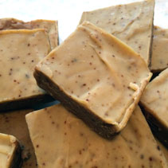
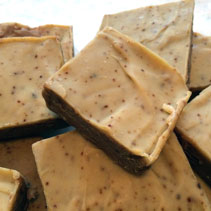

Paper Boat Soaps are meticulously made with the very best organic and fairly traded ingredients available. They're both cleansing and moisturizing, so let them treat your skin well this winter!
The five soaps of 2013:
The 2013 soaps were made in 5 small batches, each with a unique essential oil blend. You can find your batch number written on the back of your soap's packaging, and view the list of ingredients below.
- Batch 1: Extra virgin olive oil, unrefined organic coconut oil, organic earl gray tea of distilled water, lye, organic fairly trade shea butter, ground organic walnuts, organic essential oils of lavender and rosewood.
- Batch 2: Extra virgin olive oil, unrefined organic coconut oil, unrefined organic cocoa butter, distilled water, lye, castor oil, and essential oils of ylang ylang and lemongrass.
- Batch 3: Extra virgin olive oil, unrefined organic coconut oil, unrefined organic cocoa butter, distilled water, lye, castor oil, dried rose petals, and essential oils of rose geranium, and ylang ylang.
- Batch 4: Extra virgin olive oil, unrefined organic coconut oil, distilled water, organic fairly traded red palm oil, lye, castor oil, organic unrefined cocoa butter, and organic essential oils of frankincense, grapefruit, and clary sage.
- Batch 5: Extra virgin olive oil, unrefined organic coconut oil, organic fairly traded red palm oil, distilled water, lye, castor oil, organic unrefined cocoa butter, and organic essential oils of lavender, atlas cedar, and patchouli.
 
